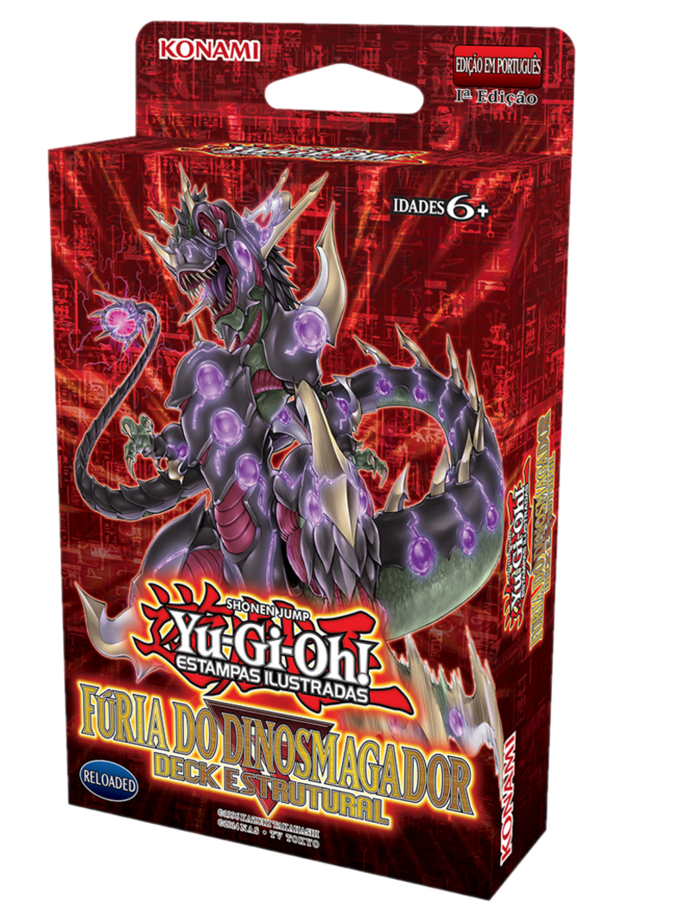

Fúria dos Dinossauros

Lista das cartas
- R04-PT000 Pititeranodon
- R04-PT001 Ultimate Tyranno Condutor
- SR04-PT002 Olviraptor Comendo Almas
- SR04-PT003 Megalosmagador 2x
- SR04-PT004 Sabressauro 2x
- SR04-PT005 Tyranno Supercondutor
- SR04-PT006 Ultimate Tyranno
- SR04-PT007 Dinobesta Super Antiga
- SR04-PT008 Bráquio Sauropod
- SR04-PT009 Tirano Infinito
- SR04-PT010 Braquio Negro
- SR04-PT011 Ovo Jurássico Milagroso
- SR04-PT012 Gilasaurus
- SR04-PT013 Bebecerassauro
- SR04-PT014 Miscelaneossauro
- SR04-PT015 Hordeum Maligno Salamandra
- SR04-PT016 Estegociber
- SR04-PT017 Trifortalezatops
- SR04-PT018 Esqueletossauro
- SR04-PT019 Mascaosso
- SR04-PT020 Coelho de Socorro
- SR04-PT021 Mundo Perdido
- SR04-PT022 Escavar Fóssil
- SR04-PT023 Pílula de Grande Evolução
- SR04-PT024 Tornados Gêmeos
- SR04-PT025 Enterro de Outra Dimensão
- SR04-PT026 Espadas da Luz Oculta
- SR04-PT027 Decisão Dolorosa
- SR04-PT028 Dai Inesperado
- SR04-PT029 Transformação Campal
- SR04-PT030 Fim da sobrevivência
- SR04-PT031 Sobrevivência do Mais Apto
- SR04-PT032 Escavação de Fósseis
- SR04-PT033 Extinção do Cronograma
- SR04-PT034 Trio Ojama
- SR04-PT035 Archdemônios do Pesadelo
- SR04-PT036 Força do Espelho Trêmula
- SR04-PT037 Grande Corneta Celestial
- SR04-PT038 Explosão Secreta
- SR04-PTTKN Ficha de Jurraovo
Lista criada usando 3 decks